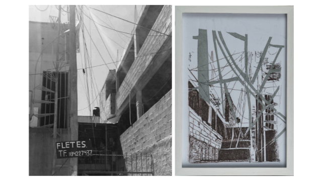
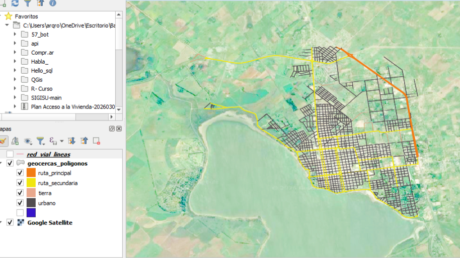
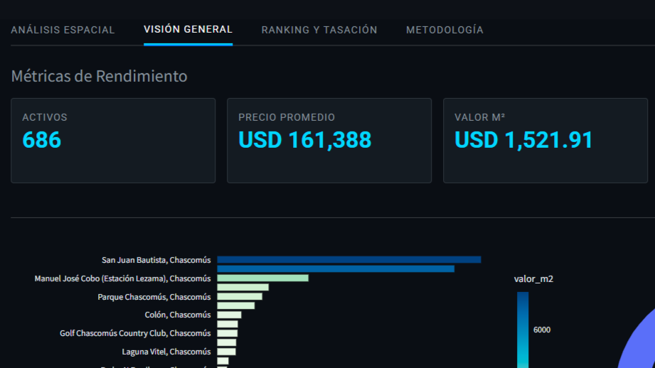

Revista Habitat Inclusivo

Una mirada sobre los territorios excluidos. Publicación académica que aborda las problemáticas de la vulnerabilidad urbana, la exclusión social y las metodologías de intervención arquitectónica comunitaria.
Geocercas Viales Analytics

Análisis de datos espaciales y geocercas aplicadas a la analítica vial. Un estudio enfocado en optimizar la comprensión de flujos y dinámicas urbanas.
Mercado Inmobiliario CH

Investigación y procesamiento de datos vinculados al mercado inmobiliario, herramientas clave para el diagnóstico territorial y la toma de decisiones en proyectos de arquitectura.